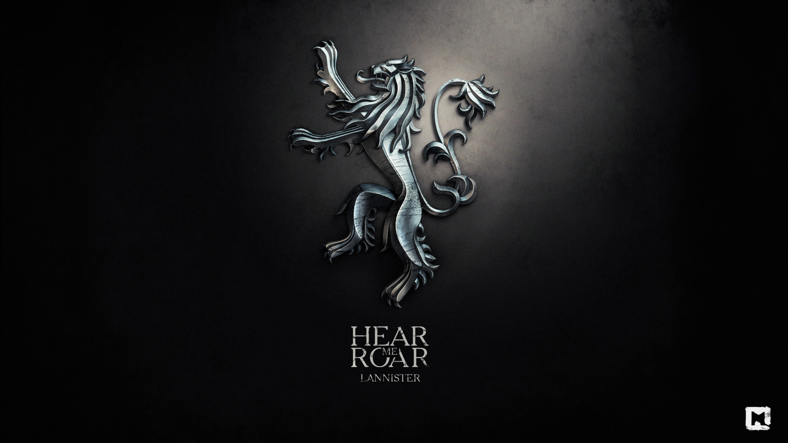

Ланнистеры
Ланнистеры с Утёса Кастерли (ориг. House Lannister) — один из великих домов Вестероса, правящий на Западных землях. Это один из самых богатых и влиятельных домов, а также одна из старейших династий. Хотя девизом дома является фраза «Услышь мой рёв!», она редко упоминается. Более широко известна поговорка: «Ланнистеры всегда платят свои долги». Их земли находятся в западной части континента, лорды дома занимают замок Утёс Кастерли, построенный на скалистом мысе. Глава дома носит титул верховного лорда Западных земель и хранителя запада.
История
До событий сериала
Ланнистеры высоки, красивы и светловолосы, они ведут свою родословную от андалов, которые смогли уничтожить могущественное королевство в Западных землях (по мужской линии) и от Ланна Умного, легендарного прохвоста и обманщика, который смог завладеть Утёсом Кастерли (по женской линии). Долгое время Ланнистеры правили Западными землями как Короли Скалы. Последним из этой королевской династии стал Лорен Ланнистер. Объединившись с Королём Простора Мерном Гарденером, он выставил против Эйгона Таргариена шестьдесят тысяч воинов, но потерпел поражение в битве, известной как Пламенное поле. С этого времени Ланнистеры служат королю на железном троне в качестве верховных лордов Западных земель и хранителей запада.
Золотые прииски Утёса Кастерли и Золотого Зуба сделали Ланнистеров самым богатым из великих домов.
Титос Ланнистер, отец Тайвина Ланнистера, привёл дом в упадок, растеряв значительные денежные средства на неблагонадёжных вложениях. В результате вассальный дом Рейнов поднял восстание. Тайвин Ланнистер сумел не только подавить его, но и восстановить былую репутацию дома. Устроив брак своей дочери Серсеи с Робертом Баратеоном в обмен на поддержку в войне против Безумного Короля, Тайвин в итоге породнился с будущим королём. У Серсеи родилось трое детей, отцом которых был не король, а её брат Джейме.
Известные представители
- Лорд Тайвин Ланнистер, старший сын лорда Титоса и леди Джейн, бывший глава дома, Лорд Утёса Кастерли, Хранитель Запада, Верховный Лорд Западных Земель, десница короля Джоффри и Томмена и спаситель Королевской Гавани. Убит своим собственным сыном Тирионом в 301 году от З.Э.
- Леди Джоанна Ланнистер, жена Тайвина, умерла при родах Тириона в 266 году от З.Э.
- Королева Серсея Ланнистер, дочь лорда Тайвина и леди Джоанны, сестра-близнец Джейме, вдова короля Роберта Баратеона, бывшая королева-регент Семи Королевств. После смерти отца юридически стала главой дома. Королева Андалов и Первых Людей, Защитница Государства. Погибла в ходе обвала Красного замка в 305 от З.Э. в возрасте 43 лет во время сожжения Королевской Гавани.
- Сир Джейме Ланнистер, также известный как «Цареубийца», старший сын лорда Тайвина и леди Джоанны, брат-близнец Серсеи, бывший рыцарь Королевской гвардии. Погиб в ходе обвала Красного замка в 305 от от З.Э. в возрасте 43 лет во время сожжения Королевской Гавани.
- Король Джоффри Баратеон, старший внук лорда Тайвина, сын Серсеи и Джейме (официально считается, что его отцом является Роберт Баратеон), Король Андалов и Первых Людей, Лорд Семи Королевств, Защитник Государства. Отравлен на собственной свадьбе леди Оленной Тирелл в 301 году от З.Э. в возрасте 19 лет.
- Принцесса Мирцелла Баратеон, внучка Лола Тайвина, дочь Серсеи и Джейме (официально считается, что её отцом является Роберт Баратеон). В рамках договоренностей о союзе с Мартеллами отправлена в Дорн. Отравлена Элларией Сэнд во время возвращения в Королевскую Гавань в 302 году от З.Э. в возрасте 19 лет.
- Король Томмен Баратеон, внук лорда Тайвина, сын Серсеи и Джейме (официально считается, что его отцом является Роберт Баратеон), Король Андалов и Первых Людей, Лорд Семи Королевств, Защитник Государства. Совершил самоубийство после взрыва в Великой Септе Бейлора в 303 году от З.Э. в возрасте 16 лет.
- Лорд Тирион Ланнистер, также известный как «Бес» и «Полумуж», младший сын лорда Тайвина и леди Джоанны. Бывший десница короля Джоффри, бывший мастер над монетой. Был ошибочно осуждён за убийство короля Джоффри, убил отца, бежал в вольные города. Где стал десницей королевы Дейнерис Таргариен и был на этом посту вплоть до её гибели. Нынешний глава дома, Лорд Утёса Кастерли, Верховный Лорд Западных Земель и Хранитель Запада.
- Сир Киван Ланнистер, младший брат Тайвина и его ближайший советник. Погиб при взрыве Великой Септы Бейлора в 303 году от З.Э.
- Дорна Ланнистер урождённая Свифт, жена Кивана.
- Сир Лансель Ланнистер, старший сын Кивана, бывший оруженосец Роберта Баратеона, после его смерти посвящен в рыцари. Обратился к религии и вступил в организацию Воробьи. Погиб при взрыве Великой Септы Бейлора в 303 году от З.Э.
- Мартин Ланнистер, второй сын Кивана, убит лордом Рикардом Карстарком в 300 году от З.Э. в возрасте 15 лет.
- Уиллем Ланнистер, третий и самый младший сын Кивана, убит лордом Рикардом Карстарком в 300 году от З.Э. в возрасте 14 лет.
- Сир Стаффорд Ланнистер, родной брат леди Джоанны и двоюродный брат лорда Тайвина, убит в битве у Окскросса лордом Рикардом Карстарком в 299 году от З.Э.
- Неназванный отец Элтона Ланнистера, муж Синды.
- Синда Ланнистер, одна из представительниц побочных ветвей дома Ланнистеров.
- Элтон Ланнистер, сын Синды. Был убит собственным кузеном Джейме в 299 году от З.Э.
- Сир Реджинальд Ланнистер, женат, один из представителей Ланнистеров из Ланниспорта.
- Орсон Ланнистер, слабоумный кузен Серсеи, Джейме и Тириона. Был убит ударом копыта мула.
Предки
- Ланн Умный, легендарный основатель дома. Считался великим обманщиком и очень умным человеком. Смог отнять у дома Кастерли их родовой замок Утёс Кастерли.
- Король Герольд I Ланнистер, Король Скалы. Также известный как «Герольд Великий». Отплыл на Железные острова и вернулся с сотней железнорожденных заложников, пообещав вешать по одному за каждый набег на свои берега.
- Король Томмен II Ланнистер, Король Скалы. Последний представитель дома обладающий фамильным мечом из валирийской стали Светлый Рёв. В составе экспедиции отправился к руинам Старой Валирии, где бесследно исчез.
- Лорд Лорен Ланнистер, последний Король Скалы, преклонил колено перед Эйгоном Завоевателем и стал первым Хранителем Запада, Верховным Лордом Западных Земель и Лордом Утёса Кастерли.
- Сир Тайленд Ланнистер, член Малого совета при короле Визерис I Таргариене. Был Мастером над монетой и Мастером над кораблями.
- Лорд Джейсон Ланнистер, Хранитель Запада, Верховный Лорд Западных Земель и Лорд Утёса Кастерли. Был главой дома во время Танца драконов.
- Леди Джоханна Ланнистер урождённая Вестерлинг, жена лорда Джейсона.
- Лорд Деймон Ланнистер, Хранитель Запада, Верховный Лорд Западных Земель и Лорд Утёса Кастерли. Умер во время Великого весеннего поветрия.
- Неназванная дочь лорда Деймона Ланнистера. Была спасена из плена сиром Дунканом Высоким.
- Леди Роанна Ланнистер, урождённая Веббер, мать Тайвальда, Тиона и Титоса.
- Сир Тайвальд Ланнистер, старший брат-близнец Тиона, и старший брат Титоса. Пал в ходе одной из битв.
- Сир Тион Ланнистер, младший брат-близнец Тайвальда и старший брат Титоса. Был женат на Эллин Рейн. Погиб в ходе одного из восстаний Блэкфайров.
- Лорд Титос Ланнистер, младший брат Тайвальда и Тиона, Хранитель Юга, Верховный Лорд Западных Земель и Лорд Утёса Кастерли. Отец Тайвина и Кивана.
- Леди Джейн Ланнистер, урождённая Марбранд, жена лорда Титоса, мать Тайвина и Кивана.
Военные силы
Дом Ланнистеров может в относительно короткое время мобилизовать около 60 000 солдат. Богатство дома позволяет ему иметь наилучшим образом экипированную и вооружённую армию. С ними могут сравниться лишь Тиреллы, но армия Тиреллов более многочисленна.
У Ланнистеров есть флот, базирующийся в Ланниспорте, но он довольно скромный, так как большая его часть была уничтожена во время восстания Грейджоя.
На момент 305 года от З.Э. у Ланнистеров заключён контракт с опытной организацией наёмников Золотыми мечами, численность которой составляет 20 000 человек. У них имеются конники, мечники, лучники и несколько боевых слонов. Возглавляет их Гарри Стрикленд.
Также у Ланнистера заключён военный альянс с Эуроном Грейджоем. Поэтому Железный флот по сути стал эквивалентом Королевского флота.
После сожжения Королевской Гавани армия Ланнистеров была окончательно разбита, Железный флот потоплен, а войско Золотых мечей сожжено.